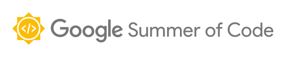

2. Google Summer of Code Contribution¶
A4MCAR Project is a project that is initiated by Fachhochschule Dortmund IDiAL Institute. The institute is highly involved with the AMALTHEA4public Project ,its successor APP4MC Project and APPSTACLE Project which are developed as ITEA research projects and funded by Federal Ministry of Education and Research (BMBF) in Germany. The projects are strongly partnered with Bosch GmbH and Eclipse Foundation GmbH.
{kind=link}
In the scope of three of the projects, and especially parallel with the APP4MC Project, which aims to create an open-source platform that is used for engineering embedded multi-core and many-core software systems, the demonstrator projects A4MCAR Project and Rover Project are developed which are used effectively to test the tools and standards created by the IDiAL institute and evaluate the results.
Google Summer of Code is an annual program that is organized by Google Inc. and that is done for encouraging students to open-source projects in open-source organizations. In the program, Google Inc. delivers stipends to students who successfully complete the program. With the A4MCAR project, Mustafa Özçelikörs participated in Google Summer of Code 2017 with the supervision of Robert Höttger with The Eclipse Foundation as the mentoring organization.
During his master studies and Google Summer of Code 2017 participation, author of the A4MCAR project, Mustafa Özçelikörs was involved in both of the projects A4MCAR (mainly) and Rover in order to address several topics:
- Developing embedded drivers and libraries for embedded units
- Developing means and tool support to test APP4MC
- Addressing schedulability and traceability of the programs
- Developing necessary Human Machine interfaces for embedded units
- Using APP4MC actively and reporting the bugs to the development team
- Developing interfaces for technologies such as cloud and IoT
In order to learn more about the project or download the source code of A4MCAR and Rover projects, go to the link Accessing the Project.
To see the commits done to the project, please follow the link http://git.eclipse.org/c/app4mc/org.eclipse.app4mc.examples.git/log/.
{kind=link}